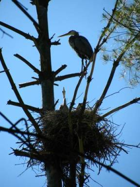

WildlifeThe technological advances that are changing our daily lives are also opening windows on the natural world to a degree we could not imagine a decade ago. With Google Earth, drones, game cameras, electronic tracking devices, and crowd-sourcing data collection sites, we are now able to track the movements of birds and animals, spy on their nests and dens, detect their chemical signals, and even scan their brain activity. The knowledge we are gaining is rapidly dispelling the notion that only humans can think, learn, communicate, feel pain, experience emotions, care for each other, and use tools. As it becomes easier to document the behavior of wild creatures, more organizations and “citizen scientists” are joining efforts to study them. In the Resources section of this website we have included a list of “citizen science” opportunities in our region, and it’s a long one. The more we learn about our fellow creatures and the web of interrelationships connecting us all, the better stewards we can be – of the forest and of our world.The following information on the wildlife found in the Fairlee Forest is just a start. We hope it will inspire you to follow the links for additional information, visit the forest with new eyes and ears, or share your observations and knowledge on our Facebook page. |
Mammals
Many people consider black bears our largest carnivore. They are actually omnivores and primarily vegetarian, living mainly on seasonally available roots, nuts, fruits, seeds, and even leaves. They will eat carrion, fish, frogs, rodents and, when they can get them, the occasional fawn or incapacitated deer. But they are large. The average weight for a male is 250 lbs., 125 lbs. for a female. They can, however, exceed 500 lbs., with the record set at 880 lbs.
Especially when preparing for winter or recovering from hibernation in spring, bears must have extensive unfragmented territories from which to glean enough food to sustain their considerable bulk. In the course of a year, a Fairlee Forest bear may well utilize the entire 148,000 acre area designated as prime bear habitat by the Vermont Fish and Wildlife Department or VFW and will not hesitate to invade human neighborhoods in search of food. Bears love bird seed, which is very rich and nourishing. When bears learn to associate human environments with food, they quickly become a nuisance, which rarely ends well for the bear. VFW recommends that bird feeders be taken down between April 1 and November 30, but not all bears hibernate throughout the winter. Male bears are known to wake and prowl.
But they are large. The average weight for a male is 250 lbs., 125 lbs. for a female. They can, however, exceed 500 lbs., with the record set at 880 lbs.
Especially when preparing for winter or recovering from hibernation in spring, bears must have extensive unfragmented territories from which to glean enough food to sustain their considerable bulk. In the course of a year, a Fairlee Forest bear may well utilize the entire 148,000 acre area designated as prime bear habitat by the Vermont Fish and Wildlife Department or VFW and will not hesitate to invade human neighborhoods in search of food. Bears love bird seed, which is very rich and nourishing. When bears learn to associate human environments with food, they quickly become a nuisance, which rarely ends well for the bear. VFW recommends that bird feeders be taken down between April 1 and November 30, but not all bears hibernate throughout the winter. Male bears are known to wake and prowl.
Another common misperception is that bears den in caves. Black bears den anywhere they can curl up under some kind of cover – an overturned or hollow tree, an overhanging ledge, or even just a depression scratched out of a dry hillside. Pregnant females give birth during their winter hibernation so are more apt than males to seek a dry spot sheltered from wind and snow. They doze more than sleep and remain attentive to the needs of their cubs, who are quite active and vocal in the den. You can spy on this whole process through several webcam sites, starting with www.bear.org operated by the North American Bear Center in Ely, MN.
 The most numerous large predator in Fairlee Forest is the Eastern coyote. Coyotes are not native to Vermont but have come to New England relatively recently from the West via southern Canada, where they interbred with the grey wolf. Thanks to genetic contributions made by the wolf, our coyotes are not the scrawny, long-legged, big-eared critters found in other parts of the US but rather handsome, robust animals with rich, full coats of varying colors. Often accused of killing deer, they do take some fawns but are no match for most adults except when there is a crust on deep snow. According to studies done by Vermont Fish & Wildlife, their effect on deer numbers is insignificant. Coyotes live mainly on rodents, hare, other small mammals, wild fowl, plants, tubers, eggs, carrion, and fox.
The most numerous large predator in Fairlee Forest is the Eastern coyote. Coyotes are not native to Vermont but have come to New England relatively recently from the West via southern Canada, where they interbred with the grey wolf. Thanks to genetic contributions made by the wolf, our coyotes are not the scrawny, long-legged, big-eared critters found in other parts of the US but rather handsome, robust animals with rich, full coats of varying colors. Often accused of killing deer, they do take some fawns but are no match for most adults except when there is a crust on deep snow. According to studies done by Vermont Fish & Wildlife, their effect on deer numbers is insignificant. Coyotes live mainly on rodents, hare, other small mammals, wild fowl, plants, tubers, eggs, carrion, and fox.
We have both red and grey varieties of fox here. In addition to being much smaller than coyotes, foxes are more solitary. They eat mostly rodents, birds, eggs, and carrion, but will basically gobble up anything they can find lying around. The grey fox is unique among Canidae for its ability to climb trees, which it does to escape coyotes and rob bird and squirrel nests.
 The bobcat is another species returning to our forests after a long absence. Solitary felines about the size of a very large housecat (though males can reach 50 pounds), bobcats are seldom seen because they are most active at dawn and dusk. They live mainly on small mammals like snowshoe hare, and on ground-nesting birds, but are also known to kill fawns and infirm deer in winter when crusty deep snow gives them the advantage.
The bobcat is another species returning to our forests after a long absence. Solitary felines about the size of a very large housecat (though males can reach 50 pounds), bobcats are seldom seen because they are most active at dawn and dusk. They live mainly on small mammals like snowshoe hare, and on ground-nesting birds, but are also known to kill fawns and infirm deer in winter when crusty deep snow gives them the advantage.
The bobcat’s larger cousin, the lynx, has recently moved back into northernmost Vermont. While lynx are primarily boreal animals and not known to have come into our area, their even larger relative, the Eastern mountain lion (catamount) has been seen here. At least one specimen has been observed crossing into and out of Fairlee Forest. Rumors of such sightings that have circulated for years are now being taken more seriously. Inveterate “tracker” Susan Morse finds increasing evidence of their presence in northern Vermont, and even the cautious Fish & Wildlife Department is acknowledging their existence in the state. Mountain lions are major predators of deer and could do much to help keep herd populations in check. As these cats range over very long distances, those seen here were probably transients. So far, there have been no confirmed reports of resident mating pairs in this part of Vermont, but it may only be a matter of time and the forbearance of our hunters. Fortunately, it is illegal to kill either of our big cats — or wolves and pine marten, a member of the weasel family valuable for its pelt.
Fairlee Forest boasts several members of the
The largest herbivore in Fairlee Forest is, of course, the moose, at over 6 feet tall at the shoulder and weighing up to 1500 pounds. While some of the big tracks we see around the wetland
Porcupines, snowshoe hare, raccoons, skunk, red squirrels (grey squirrels seem to prefer lower altitudes near town), flying squirrels, chipmunks, mice, shrews, moles, bats, voles and, in the wetlands, beaver, otter, and muskrat are among the other mammals in Fairlee Forest. You may not see many of them when you visit, but rest assured, they see you. Learn to recognize their tracks, scat, and other signs of their presence and you will begin to realize you are not alone when in these woods.
Several species of hawk do nest in Fairlee Forest, the most common being red-tailed, red-shouldered, broad-winged, and sharp-shinned hawks. Others are occasional visitors, including the peregrine falcons that nest on the Palisades, also coopers, goshawks, and, in winter, even the rough-legged hawk from northern Canada. Of our local owls, the barred is the most often heard (“who cooks for youooo”) and most easily seen, since it is quite large (44” wingspan) and not exclusively nocturnal. But Fairlee Forest, at least at its edges, would be suitable habitat for the even larger great-horned and possibly the less common long-eared owl. Some years we also see the ghostly snowy owl, down from Canada when a boom year in tundra lemmings results in a bumper crop of surviving owlets that must then expand their territory.
Fairlee Forest is home to at least one extended family of ravens, largest of the wickedly smart Corvids. These are upland residents of rough terrain and, in Fairlee, seem to remain at altitudes above 800 feet. With impressive 53” wingspans, the raven family can often be seen doing acrobatic aerial displays over our hills and valleys. Their call is a hoarse ‘grawk!’ not a caw. And they have a pleasant burbling song, too, which is not surprising since they are actually considered songbirds. Notorious mimics as well, ravens will imitate a barking dog or a tapping hammer. Their much smaller cousins, the crows, who share this trait, know better than to wander into raven air space and generally remain down by the village.
 In the wetland rookery we have the dinosaurian great blue herons, like feathered pterosaurs with 70” wingspans, that gather there to nest each spring. And in the woodland we have many large families of wild turkey scratching around in the leaf litter and roosting in the trees. The sudden explosion and instantly vanishing purr of wingbeats beside a trail is most likely one of our abundant ruffed grouse. Male grouse are responsible for
the resonant drumming sound, like a reluctant motor, in the early spring forest. Later you may see a flustered hen trying to hustle her large brood of unruly chicks across a trail. The wetland ponds are visited by migrating ducks, but the wood ducks and mergansers may be raising chicks in tree cavities near the water. Those cavities and the trunks of rotting forest trees that look like they’ve been bombarded by canon fire are probably the work of the lordly pileated woodpecker, with its jaunty red-peaked cap. These ample holes also serve as homes for mammals and barred owls, and nesting sites and group winter shelters for many smaller birds.
Magnificent as our large forest birds are, they can’t hold a candle to the smallest ones for courage, heart, and strength. The real jewels in our forest are the tiny, multicolored songbirds that come here every spring to raise their young after flying thousands of miles from Mexico, Central America, and South America — some over open ocean. Thanks to the growing number of global “citizen scientists” who report backyard birds to organizations like Audubon and Cornell Lab of Ornithology,
who monitor specific species for organizations like the Vermont Center for Ecostudies, or assist scientists checking banded birds at their winter and summer habitats, we have acquired a considerable amount of data on bird migrations over the years. However, recent developments in GPS technology and super lightweight geo-locator tracking devices are showing us how truly extraordinary these long-distance flights are, and how perilous.
Scientists compiling this information estimate that over five billion American songbirds make intercontinental flights each year, some logging round-trips of as much as 12,000 miles. Many of them do not survive the trip, which is fraught with hazards and obstacles. Storms, tall buildings, pet cats in our yards, wind turbines, chemical toxins in the foods they eat, and increasingly unpredictable conditions caused by climate change are just some of the dangers they face. Many leave their winter territories already weak and undernourished due to shrinking southern habitats and food sources — if they haven’t already been killed for food, feathers, or sport. The weak ones won’t make it, but neither will many of the strong. America’s songbird populations are thought to have declined by over 30% in the past forty years, with loss of winter habitats and the migrations themselves being the weakest links in their lifelines. If the northern nesting grounds were also to succumb to habitat loss, many of our migrating birds would be in a much more difficult situation.
Fortunately, Vermont’s heavily forested landscape provides excellent habitat for migrating songbirds. Regeneration of our vast woodlands has made it possible for survivors of the migration to recover from their journey quickly, breed successfully, and raise healthy, vigorous offspring, sometimes several broods a summer. Fairlee Forest plays an important role in this saga in part because of its location near the Connecticut River flyway. According to the North American Breeding Survey, a greater percentage of songbird species nest in Vermont, New Hampshire, Maine, New York's Adirondack mountains, and northern Michigan than in any other part of the continental U.S. How fortunate we are
to be on the receiving end of such a gift!
And what spectacular birds they are too: brilliant
scarlet tanagers, iridescent indigo buntings, carnival-colored orioles, hummingbirds, vireos and flycatchers, robins and redstarts, and dozens of tiny warblers in every imaginable combination of colors and patterns, all filling the hills and valleys with song. The healthiest males generally arrive first, then the healthiest females, then the stragglers. Many are returning to the same location they left the previous fall, but their first stop will be the floodplain and its farmlands and small towns, which green up earlier in the season than the hills. There, emaciated from their journey, whole flocks fall like rain drops to fill up on insects and seeds before beginning the search for good nesting sites and mates. Our homes and yards are the gateways to these nesting grounds for the hungry, exhausted migrants. We can provide the welcome they deserve by refraining from using pesticides and other toxins on our plants, keeping cats indoors, and growing plants that offer adequate food, cover, and shelter. For advice on making your yard more bird-friendly, see Audubon’s Landscaping for Birds article.
Once they have recovered from their journey, the migrants will seek nesting sites particular to their species. Some like to be near cultivated land and homes, others as deep in the forest as they can get. Some, such as the oven bird
We are perhaps more familiar with the birds that remain in Fairlee throughout the winter since many are attracted to our feeders. The friendly chickadees, svelte nuthatches, pine siskins, finches, redpolls, grosbeaks, blue jays, titmice, woodpeckers, and — at lower elevations — cardinals are among the regulars. Others who normally migrate may remain here during unusually warm winters, and still others from subarctic Canada may show up here during very cold ones. A few, like the tiny golden-crowned kinglet, are insect-eaters so seldom come near our feeders.
How do these birds survive the cold, and what do they find to eat if we don’t feed them? Many plants retain seeds and fruits throughout the winter, and there are always fat grubs and insects hiding in rotten wood and the bark of trees. The little kinglets take advantage of small insects that emerge on sunny days. Many winter birds bulk up in the fall and can go for long periods of time in a state of torpor when unable to feed during the cold months. As for warmth, birds’ inner down can be fluffed up to increase insulation under their wind-resistant outer feathers by day. At night many species huddle together in tree cavities or other sheltered nooks, especially in thick conifer groves. Some are able to lower their metabolism and heart rate to reduce their consumption of oxygen during sustained fasts and storms.
Our ruffed grouse do quite well in winters with deep powdery snow, diving into it at night to roost in its insulating depths safe from wind, cold, and predators. By day they emerge to feed on soft buds and fruits of trees like aspen. Turkeys do better on crusty snow than powder, traveling on the surface between patches of bare ground where they can scratch up acorns, grains, insects, and whatever other edible material can be found in the litter. During storms they can fast for weeks if necessary, hunkered down in the shelter of dense conifer groves. Since adequate food is key to winter survival for all resident birds, our feeders and feed plots undoubtedly contribute to the wellbeing of many species, but all the birds that survive a Vermont winter deserve admiration for their resourcefulness and grit. The more we learn about bird behavior, the more we begin to understand how remarkable these creatures really are, and how vulnerable.
In 2013, conservation biologist Steve Hagenbuch of Audubon Vermont conducted a comprehensive assessment of Fairlee Forest’s bird habitats. It includes information about the types of birds that are or could be found here, the kinds of habitat they prefer, and recommendations for habitat improvement that could be equally useful to private forest landowners interested in helping make our forests as hospitable to birds as possible, especially to the little migrants who come so far to raise their young.
 and on the forest roads and trails are from transient males, others are certainly resident. The normal range for moose is between two and ten miles,
well within the scope of Fairlee Forest, and the tracks we see are more often of a doe and calf together than a solo roaming male. Our local moose population is, however, especially vulnerable to climate change. Vermont is at the very southern edge of its range, so as our weather warms, they will move
farther north. Warmer winters also bring increases in winter tick infestations, to which moose are especially susceptible. When tick infestations are heavy, moose can lose so much blood and scratch off so much hair that they either bleed to death or die of hypothermia. In recent years the state’s moose population has declined significantly. Although the last two cold winters seem to have caused a rebound, winters like these are likely exceptions to the rule, not a trend. Moose factsheet.
and on the forest roads and trails are from transient males, others are certainly resident. The normal range for moose is between two and ten miles,
well within the scope of Fairlee Forest, and the tracks we see are more often of a doe and calf together than a solo roaming male. Our local moose population is, however, especially vulnerable to climate change. Vermont is at the very southern edge of its range, so as our weather warms, they will move
farther north. Warmer winters also bring increases in winter tick infestations, to which moose are especially susceptible. When tick infestations are heavy, moose can lose so much blood and scratch off so much hair that they either bleed to death or die of hypothermia. In recent years the state’s moose population has declined significantly. Although the last two cold winters seem to have caused a rebound, winters like these are likely exceptions to the rule, not a trend. Moose factsheet.
 White-tailed deer are the principal herbivores in Fairlee Forest, and we have enough of them to be concerned about their impacts on the forest ecosystem. We all love deer for their beauty and tasty meat; we do not love them for their raids on our gardens and cargo of ticks (mice are also important vectors for Lyme disease).
What we are starting to learn, too, is that an over-abundance of deer in a forest can wreak as much havoc on native forest plants and tree saplings as on our garden plants, with a resulting impact on habitat depended upon by birds and other mammals. Valuable oak and sugar maple saplings are susceptible, as are many of our favorite native wildflowers. With no other large predator species to help keep deer in check, this job falls to disease, starvation, or hunters — and even in Vermont, the number of hunters is in steep decline.
White-tailed deer are the principal herbivores in Fairlee Forest, and we have enough of them to be concerned about their impacts on the forest ecosystem. We all love deer for their beauty and tasty meat; we do not love them for their raids on our gardens and cargo of ticks (mice are also important vectors for Lyme disease).
What we are starting to learn, too, is that an over-abundance of deer in a forest can wreak as much havoc on native forest plants and tree saplings as on our garden plants, with a resulting impact on habitat depended upon by birds and other mammals. Valuable oak and sugar maple saplings are susceptible, as are many of our favorite native wildflowers. With no other large predator species to help keep deer in check, this job falls to disease, starvation, or hunters — and even in Vermont, the number of hunters is in steep decline.
Birds
Over three-hundred bird species reside in Vermont at least part of each year. Among these are species that in the past were considered rare or endangered — eagles, ravens, and turkeys. With wingspans over two meters (80”) wide, bald eagles can often be seen soaring overhead or perched near the forest edge and wetland. The white heads and tails of the adults are diagnostic, but the brownish young could easily be mistaken for golden eagles if the latter were not so rare in the Northeast. No eagle nests have been observed in Fairlee Forest for many years, though a very tall tree above the aptly-named Eagles Bluff lookout over Lake Morey would be an ideal spot, so it’s just a matter of time. The other big birds seen circling overhead are probably vultures (soaring eagles generally cruise rather than circle and hold their long wings straight and horizontal instead of slightly uplifted and angled like vultures). Vultures are not forest residents but will visit the edges when there is exposed carrion.
 and Vermont’s state bird, the hermit thrush, nest on the ground, sometimes even in the middle or edges of trails, so watch for them when you hike! Others nest only in low vegetation at the edges of open areas, or near water, or in the understory layer of the forest. A few prefer to nest high in the forest canopy. These preferences for certain types of nesting sites are not just a matter of taste.
They have to do with the species’ particular needs and behaviors. Some species require more shelter from the elements because both parents must leave the nest to forage, some need to be near the ground because their chicks take longer to develop flight muscles, some with bright colored plumage are more vulnerable to predators from below instead of above, etc. A healthy, structurally complex woodland with all these options will have the healthiest, most diverse population of birds. Fairlee Forest is such a place, and it will get even better as more small openings are created in the dense canopy.
and Vermont’s state bird, the hermit thrush, nest on the ground, sometimes even in the middle or edges of trails, so watch for them when you hike! Others nest only in low vegetation at the edges of open areas, or near water, or in the understory layer of the forest. A few prefer to nest high in the forest canopy. These preferences for certain types of nesting sites are not just a matter of taste.
They have to do with the species’ particular needs and behaviors. Some species require more shelter from the elements because both parents must leave the nest to forage, some need to be near the ground because their chicks take longer to develop flight muscles, some with bright colored plumage are more vulnerable to predators from below instead of above, etc. A healthy, structurally complex woodland with all these options will have the healthiest, most diverse population of birds. Fairlee Forest is such a place, and it will get even better as more small openings are created in the dense canopy.